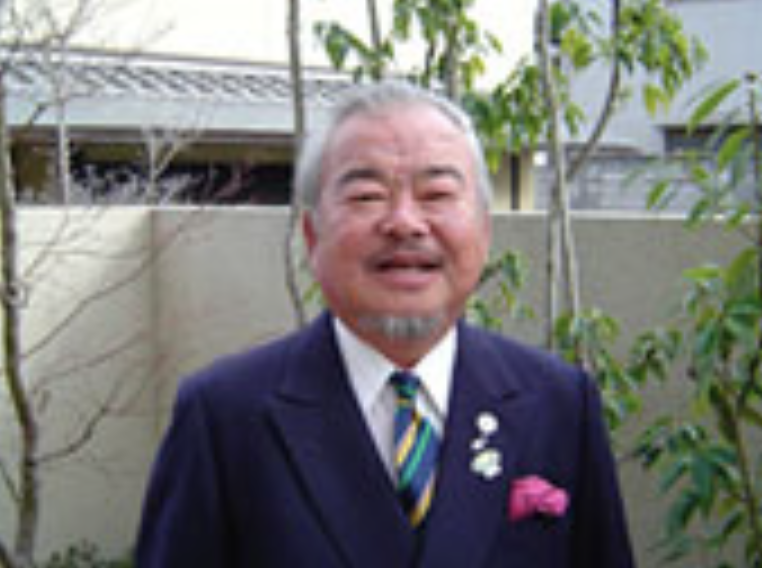

一般社団法人日本ニアピンゴルフ協会
Japan Nearpin Golf Association (JNGA)
基本情報
- 主たる事務所
- 〒604-8431 京都市中京区西ノ京原町２１番地 日東ビル１０
- 電話
- ０７５－７４８－００１２
- FAX
- ０７５－８０３－３５６９
役員
会 長 土屋 ふみ代
理 事 伊藤 德幸
理 事 並河 恭子
監 事 石井 均尚
目的
当法人は、ゴルフ競技において目標地点（ピン）に少しでも近くボールを運ぶ行為をニアピンと定義し、ニアピンを通じてゴルフ技術の向上、人々の交流に寄与しゴルフ界の発展を目的とし、その目的に資するため、次の事業を行う。
- ニアピンの普及、ニアピンプレーヤーの育成等に関する提言及び広報活動
- ニアピン検定に関する事業
- ニアピン競技会、イベント等の開催、運営に関する事業
- その他目的を達成するために必要な事業
沿革
- 2002年8月
- 創立 - ゴルフスコア向上に必要不可欠な要素は『ショットの正確性』の構築にあるとの指導理念を広くゴルファーに周知する事を目的とし、楽しく行えて、かつ客観的な指針となる『ニアピン検定®』を杉岡政紀初代会長他3名にて考案
- 2004年5月
- ニアピン検定（絶対評価）の普及活動 - ニアピン検定ターゲットを練習場に設置
- 2004年6月
- ニアピン競技（相対評価）の開催 - ニアピン王決定戦スタート（参加者 現在まで延約５万人）
- 2023年12月
- 一般社団法人化
ゴルフ競技において目標地点（ピン）に少しでも近くボールを運ぶ行為をニアピンと定義
弾道測定装置を利用したニアピン検定の普及活動スタート - 2025年4月
- 関西女子プロ研修会にて初の賞金試合「ニアピン選手権（マッチプレー方式）」開催決定
産官学連携による活動
日本ニアピンゴルフ協会は、ニアピンを通じ生涯スポーツ「ゴルフ」体験を提供しゴルフ人口の拡大を目指します。
学
中学生の地域クラブ活動にニアピン検定（絶対評価）ニアピン選手権（相対評価）を提供し、学生活動の一環としてゴルフ体験を実現します
官
部活動地域移行（スポーツ庁）を機会に、各地域の教育委員会、ゴルフ協会と連携し地域クラブとしてニアピン（ゴルフ）部の創設を目指します
産
ゴルフ場 練習場 インドア練習場 用品メーカー ゴルフ教室 インストラクターと連携し、部活動の運営をサポートします
設立の趣旨

ゴルフが日本に伝来後１００数年、特権階級の遊びからスポーツとしてのゴルフが一般市民に普及・発展し、近年では国民体育大会の種目として採用され、今や老若男女を問わず気軽に楽しめるスポーツとして親しまれています。
そこで、ゴルフというスポーツをさらに楽しいものと感じていただくために、ニアピンをゴルフの競技種目の一つとしてとらえ、「ボールをいかにピンに近づけることができるか」という観点から、ゴルフの面白さ、技術向上、精神統一を極め、ゴルフの基本理念、エチケット、マナーを大切にし、ニアピンを通じて仲間を日本国内、世界各国に増やし、平和な楽しい輪をゴルフというスポーツを通じて広げたく設立いたしました。
創始者 杉岡 政紀（元 同志社大学体育会ゴルフ部監督1985-1996）